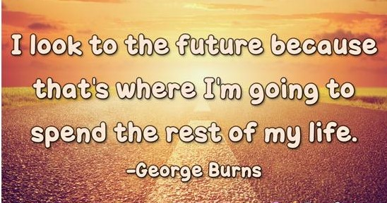

In the next few years I will have conquered one of the most Important goals I have ever set myself to achieve, which is to become a software engineer.In order to obtain this goal,I will have to do well here in college.My first plan is to finish my studies with a good grade.But this field requires more skill than grades,so I have a plan to learn programming courses online.This will help me to know programming very well and to develop my skills.My second plan is to do my job properly after finishing my college study.I want to solve problems existing in our world with a good software.I want to make people life easy.Specially in our country,Ethiopia there are many problems to be solved.Also my goal is to help my parents and make them happy.I am futuristic.I want to do many things in future with God's help. The quote in the image is one of my favoriate quotes.I look into the future because that where I am going to spend the rest of my life.Life is full of lows and ups.We have to pass hard time with patience.
HELLO!!

